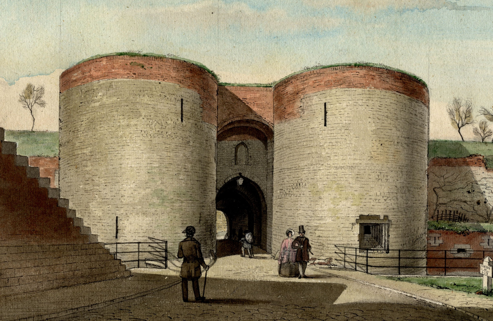
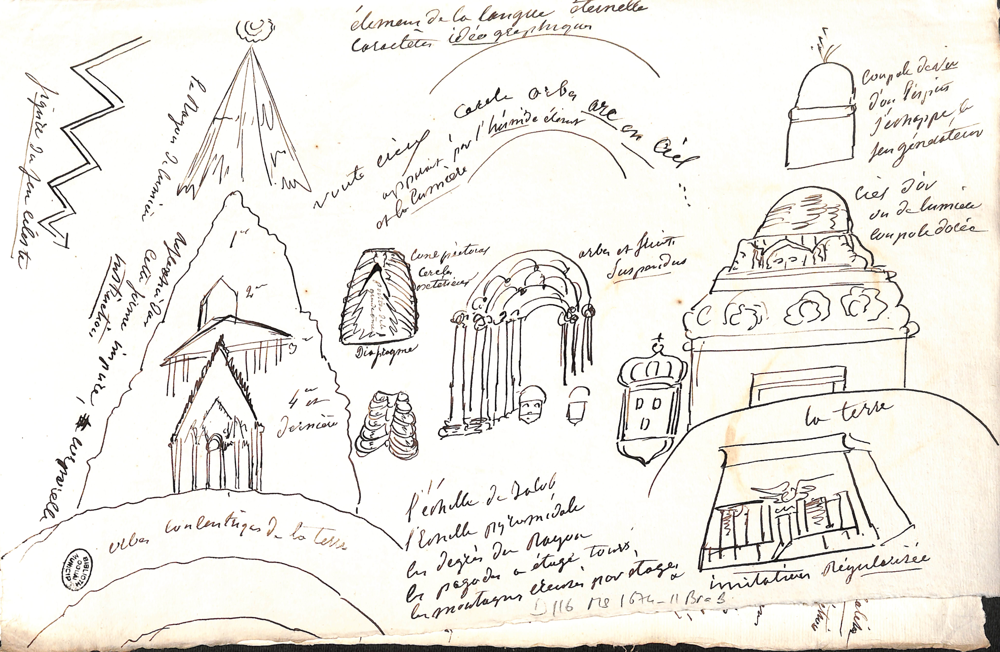

Manuscrits enluminés
Plus de 2 500 manuscrits, du 9e au 19e siècle, dont un grand nombre est enluminé.
Un fonds exceptionnel parmi les 54 Bibliothèques Municipales Classées de France.
Les bibliothèques de Douai font partie des 54 Bibliothèques Municipales Classées en France, qui gèrent un fonds patrimonial appartenant à l'État et provenant notamment de confiscations opérées dans les couvents et abbayes durant la Révolution française.
La ville de Douai a accueilli son premier imprimeur en 1543. Parcourez ces 500 ans d'Histoire du livre à travers nos collections.
Plus de 2 500 manuscrits, du 9e au 19e siècle, dont un grand nombre est enluminé.
Plus de 5 000 lettres autographes de la grande poétesse douaisienne, figure majeure du romantisme français.
Une collection de près de 300 incunables, représentative des débuts de l'imprimerie en Europe.
L'ensemble des impressions douaisiennes de 1563 au milieu du 19e siècle, témoin de l'intense activité des presses douaisiennes nées de l'Université.
Un fonds rassemblant des productions originales : ouvrages de bibliophilie, livres d'artistes, livres-objets…
Toutes les publications récentes d'auteurs et autrices et de maisons d'éditions de Douai et du Douaisis.

Carnet de relevés et études graphiques d'Alfred Robaut (1830-1909), critique d'art et collectionneur, intime de Corot. Boîtes numérisées disponibles en haute résolution.
Parcourir la collection →
Archives du sculpteur Théophile Bra (1797-1863), natif de Douai. Dessins préparatoires, correspondances et documents iconographiques numérisés par les Bibliothèques.
Parcourir la collection →